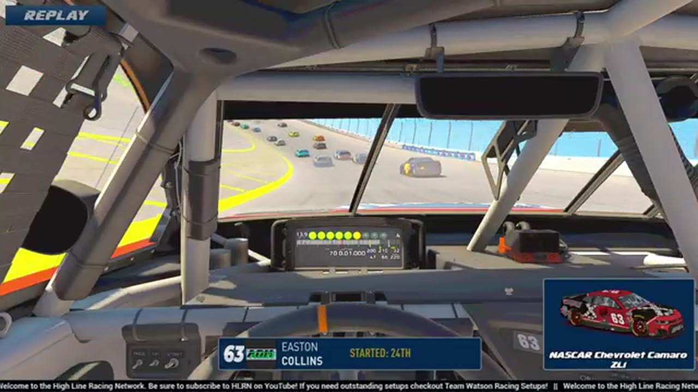

Easton Collins
Team assignment not stated in the structured owner record.
AN OFFICIAL-TAPE FOOTPRINT, NOT A RESULTS CLAIM
- Official files
- 9
- Central editions
- 0
- Exact tape cues
- 3
- Accepted podiums
- 0
Easton Collins appears in 9 official HLRN broadcast files across Season 1. The current result ledger does not assign this driver a supported top-three finish. A consistently stated team affiliation remains open for owner review. The currently indexed source window runs from December 22, 2025 through April 20, 2026.
The primary chapter index supplies 3 direct jump points. Talladega is the most frequent named track in the current appearance ledger. The densest direct-tape categories are incident (2 cues) and restart (1 cue). Those counts describe where the name is easiest to find; they are not fault, pace, or performance grades. A source-attributed car frame is published with its original video and timestamp. That is the current discovery map for Easton Collins.
Official name signals are used for discovery only. They do not become starts, points, incident counts, or an ability grade. This page is deliberately detailed about the tape and restrained about the unavailable competition record. Separately, 9 Highline Live files sit on the bonus shelf and never enter the official season ledger. The displayed name is labeled transcript normalized; that status remains visible so an owner roster can strengthen or correct the identity without rewriting the evidence trail. Those boundaries define Easton Collins's public HLRN file.
3 featured race-tape cues
These are discovery routes into complete HLRN broadcasts, not performance grades or inferred results.
- S1 / R16 · RESTART
Bryce Hinton and Nick Bowman bring Talladega back to green
S1 / R16 at 2:19:26: Bryce Hinton, Nick Bowman, and Easton Collins are in the booth's front-pack call as Talladega returns to green. The cut keeps the restart launch and the first lap of lane development together.
Talladega - S1 / R15 · INCIDENT
A multi-car crash brings out the iRacing Superspeedway yellow
S1 / R15 at 1:51:54: A multi-car incident centers the replay call on Easton Collins. This is a source-bounded incident window; it preserves what the booth reviews without assigning unsupported fault.
iRacing Superspeedway - S1 / R6 · INCIDENT
John Miles's connection issue sweeps Easton Collins into trouble
HLRN follows an Easton Collins damage signal back to John Miles, whose car appears to blink and move down into Collins. The booth continues searching for the start of Miles's problem rather than assigning Ethan Moreno to the incident.
Las Vegas
Verified team history is not consistently stated. No position-specific top-three result is currently accepted. Name normalization remains reviewable against owner records.